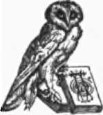

The Human Body: An Elementary Text-Book Of Anatomy, Physiology, And Hygiene | by H. Newell Martin
The Physiology and Hygiene of this text-book are, in general, identical with that of the " Briefer Course" edition of the "Human Body" published in the "American Science Series." In the present edition the chemical phraseology has been simplified in consequence of the requests of some teachers. A chapter has been added on the subjects of Fermentation and Distillation. The description of the effects of alcoholic drinks and other narcotics on the human system has been amplified, and separated into sections appended to various chapters, instead of being collected in a chapter by itself as in the "Briefer Course" edition. These changes bring the book into harmony with the laws requiring the facts concerning these substances to be taught in public schools.
| Title | The Human Body: An Elementary Text-Book Of Anatomy, Physiology, And Hygiene |
| Author | H. Newell Martin |
| Publisher | Henry Holt And Company |
| Year | 1898 |
| Copyright | 1890, Henry Holt And Company |
| Amazon | The Human Body |
Edition with Special treatment of Alcohol and other Narcotics.
By H. Newell Martin, D.Sc., M.A., F.R.S., Formerly Professor of Biology in the Johns Hopkins University and of Physiology in the Medical Faculty of the same.
Endorsement
We have examined the valuable book, "The Human Body," specially revised as to Alcohol and other Narcotics, and heartily commend it.
Its clear statement of the scientific facts in the case constitutes a powerful argument against the use of alcoholic drinks and other narcotics, which cannot fail to influence students for an intelligent sobriety.
Mary H. Hunt.
National and International Superintendent of the Scientific Department of the Woman's Christian Temperance Union: Life Director of the National Educational Association.
Advisory Board
Joseph Cook, William E. Sheldon,
Albert H. Plumb, D.D., Daniel Dorchester, D.D.
 Chapter I. The General Structure And Arrangement Of The Human Body
Chapter I. The General Structure And Arrangement Of The Human Body- Human Physiology is that department of science which has for its object the discovery and accurate description of the properties and actions of the living healthy human body, and the finding of the us...
- Microscopic Anatomy Or Histology
- When we examine the body from its exterior, we observe that a number of different materials enter into its formation. Hairs, nails, skin, and teeth arc quite different substances ; by feeling through ...
- The General Plan On Which The Body Is Constructed
- When we desire to gain a general idea of the structural plan of any object we examine, if possible, sections made through it in different directions ; the botanist cuts the stem of the plant he is exa...
- Man Is A Vertebrate Animal
- The presence of these two chambers with the solid partition between them is a primary fact in the anatomy of the body; it shows that man is a vertebrate animal, that is to say, is a back-boned animal,...
- Contents Of The Two Chief Cavities Of The Body
- Examination of Fig. 1 shows that the ventral cavity is entirely closed itself, though some things which lie in it are hollow and communicate with the exterior. On the head we find the nose, i, and the...
- Man's Place Among Vertebrates
- It must be clear to every one that although man's structural plan in its broad features, simply indicates that he is a vertebrate animal, yet he is much more like some vertebrates than others. The hai...
- Chapter II. The Microscopical And Chemical Composition Of The Body
- What The Tissues Are Like Haying gained some idea of how the larger parts of the body are arranged we may next inquire what the tissues, its smallest parts which are combined to make the larger, ar...
- The Physiological Division Of Labor
- In a tribe of wandering savages, living by the chase, we find that each man has no special occupation of his own; he collects his own food, provides his own shelter, defends himself from wild beasts a...
- Results Of A Division Of Labor
- From the division of employments in advanced communities, several important consequences result. In the first place, when every one devotes his time mainly to one kind of work, all kinds of work are b...
- The Chemical Composition Of The Body
- If we go beyond the tissues to seek the ultimate constituents of the body, we must lay aside the microscope, and call in chemistry to our aid, to discover what elements and compounds make up the cells...
- Albuminous Or Proteid Substances
- These are by far the most characteristic organic compounds existing in the body; they are only known as obtained from living beings, having never yet been artificially constructed in the laboratory; a...
- Chapter III. Putrefaction, Fermentation, Distillation, And The Nature Of Alcohol
- Putrefaction It is within the experience of every one that most dead animal and many dead vegetable matters rapidly decompose if kept in a warm, moist condition; and that while decomposing they emi...
- How Meats And Vegetables Are Preserved From Putrefaction
- Man has discovered various methods of preserving for a long time foods liable to putrefy. The simplest method is to freeze the food or at least keep it very cold, a principle applied on a large scale ...
- Alcoholic Fermentation
- Among the many fermentations there is one which demands special attention on account of its consequences to mankind: one of its products is the liquid known as alcohol—a poison which is the main const...
- Alcoholic Fermentation A Waste
- Students who have some knowledge of chemistry will see at once that the breaking down of a complex organic substance like sugar into simpler ones as alcohol and carbon dioxide means a loss or waste of...
- The Process Of Alcoholic Fermentation
- The Process Of Alcoholic Fermentation may be illustrated by brewing. To make beer, brewers usually commence with barley, which contains much starch. Yeast will not act directly on starch, so the grain...
- Alcoholic Appetite
- One of the worst features of the poisonous characteristics of alcohol is its power even in small quantities to create a craving for itself that often becomes irresistible. It is therefore the nature o...
- Distillation
- To obtain liquids containing more alcohol and less water than that found in fermented liquors, the process named distillation is employed. Alcohol boils and passes off as vapor at a temperature muc...
- Chapter IV. The Skeleton
- The skeleton * of the human body is composed of three materials : bone, cartilage, and connective tissue. The bones form the main supporting framework of the body, and determine its shape ; they pr...
- Connective Tissue
- Connective Tissue occurs partly in the form of stout cords—ligaments—which bind different bones together ; or which, called tendons, attach muscles to bones. It also supplements the coarser bony skele...
- Articulations And Joints
- If the pieces forming the hard framework of the body were put together like the beams and planks of a frame house, the whole mass would be rigid and immovable ; we could not raise a hand to the mouth,...
- The Axial Skeleton
- The fundamental portion of this is the backbone, spinal column, or spine, partly seen at e and c, Fig. 8, and represented isolated from the rest of the bones and viewed from the left side in Fig. 9. I...
- The Vertebral Column
- (Fig. 9.) The upper portion of the spine consists of twenty-four separate bones, each called a vertebra; these are piled one above the other, and separated by elastic pads made of cartilage and connec...
- The Atlas And Axis
- The first and second cervical vertebræ differ considerably from the others. The first, called the atlas (Fig. 13), carries the head; it has a very small body and a very large neural ring. A ligament, ...
- Uses Of The Mode Of Structure Of The Spinal Column
- When the backbone is viewed from one side (Fig. 9) it is seen to present four curvatures; one in the neck, convex ventrally, is followed by a curve in the opposite direction in the dorsal region; in t...
- The Facial Skeleton
- The majority of the face bones are in pairs, but two are single; one of these is the lower jaw bone or mandible, Md, Fig. 16; the other is the vomer, which forms part of the partition between the two ...
- The Cranial Sutures
- All the bones of the skull, except the lower jawbone, are immovably joined together. In the case of most of the cranial bones this occurs by a dovetailing, like that used by cabinet-makers. Each bone ...
- Peculiarities Of The Human Skeleton
- There are some interesting points in the structure of the human skeleton, connected with our power of maintaining the erect posture, and of progressing on the feet so that the hands are left free for ...
- Chapter V. The Structure, Composition And Hygiene Of Bones
- The Gross Structure Of Bones Although the bones differ very much in shape all are alike in microscopic structure and in chemical composition. When alive they have a bluish-white color, with a pinki...
- Internal Structure Of Human Bones
- If the humerus were divided lengthwise we would find that its shaft was hollow; the space is known as the medullary cavity, and in life is filled with soft fatty marrow. Fig. 22 represents such a long...
- Varieties Of Structure Found In Different Bones
- Bones which, like the humerus and femur, present a shaft and articular extremities, are called long bones; other examples are tibia and fibula, radius and ulna, metacarpal and metatarsal bones, and th...
- The Histology Of Bone
- The microscope shows that compact bone is only so to the naked eye ; even a hand lens shows minute holes in it; it but differs from spongy bone in the fact that its cavities are much smaller, and the ...
- Chemical Composition Of Human Bone
- Apart from the bone corpuscles and the soft contents of the Haversian canals and of the spaces of the cancellated bone, the hard bony substance proper is composed of animal and mineral matters so inti...
- Hygiene Of The Bony Skeleton
- In early life the animal matter of the bones is present in larger proportion than later; hence the bones of children are tougher, more pliable, and not so easily broken. The bones of a young child are...
- Appendix To Chapter V
- When giving lessons on Chapters IV and V, it is very desirable for a teacher to have at hand an articulated human skeleton. This may be purchased for about $40.00 from Henry Ward, Rochester, N. Y., an...
- Chapter VI. Joints
- The movements of the body are brought about by means of soft reddish organs known as the muscles; the lean of meat is muscle, so every one knows what a dead muscle looks like.* Muscles have the power ...
- Ball And Socket Joints
- Such a joint as that at the hip is called a ball and socket joint, and allows of a greater variety of movement than any other kind. Through movements taking place at it the thigh can (1) be flexed, th...
- Hinge Joints
- In this form the bony cavities and projections are not spherical, but are grooved and ridged so that one bone can glide over the other in one plane only, to and fro, like a door on its hinges. The ...
- Pivot Joints
- In this form one bone rotates about another. A good example is found between the first and second cervical vertebræ (Figs. 13,14). The odontoid process of the axis reaches up into the neural arch of t...
- Dislocations
- When a bone is displaced at a joint or dislocated, the ligaments are more or less torn and other surrounding soft parts injured. This generally leads to inflammation and swelling, which make it diffic...
- Explanation Of Plate II
- A view of the muscles situated on the front surface of the body, seen in their natural position. It must be understood that beneath these muscles many others are situated, which cannot be represented ...
- Chapter VII. The Muscles
- The muscles of the human body are more than five hundred in number; they vary very much in size; from tiny ones not an inch long, in the voice-box, to that on the front of the thigh (29, Pl. II.), whi...
- The Origin And Insertion Of Muscles
- Almost invariably that part of the skeleton to which one end of a muscle is fixed is more easily moved than that part on which it pulls by its other tendon ; the less movable attachment is the origin,...
- Varieties Of Muscles
- Many muscles have the simple typical form of a belly tapering towards each end, as A, Fig. 30; others divide at one end, and are called two-headed, or biceps muscles, and there are even three-headed o...
- How The Muscles Are Controlled
- Most of the muscles of the body are paired in a double sense. In the first place, to nearly every one answers a corresponding muscle on the opposite side of the body,* its true mate ; in addition, mos...
- The Gross Structure Of A Muscle
- Each muscle is an organ composed of several tissues. Its essential constituent is a number of fibres consisting of striped muscular tissue. These are supported and protected by connective tissue; inte...
- Histology Of Muscle
- The striped muscular tissue, which gives the muscle its power of contracting, is found when examined by the microscope to be made up of extremely slender muscular fibres, each about one inch in length...
- Plain Muscular Tissue
- The muscles hitherto spoken of piece of muscular ore highly magnified. At a the fibre has been crashed and twisted so as to tear its contents, while the tougher sarcolemma. elsewhere so closely applie...
- Heart Muscle
- The muscular tissue of the heart is not under the control of the will; it, however, is cross-striped, and more like the voluntary than the ordinary involuntary muscle, though it differs in some respec...
- Beef Tea
- When lean meat is heated its myosin is converted into a solid insoluble substance much like the white of a hard-boiled egg. Hence, when a muscle is boiled most of its proteid is coagulated and stays i...
- Chapter VIII. Motion And Locomotion
- The Special Physiology Of Muscles The distinctive properties of muscle are everywhere the same ; it has the power of contracting; but the uses of different muscles are very varied by reason of the ...
- Levers In The Body
- In nearly all cases the voluntary muscles carry out their special functions with the co-operation of the skeleton ; most of them are joined to bones at each end and when they contract move the bones, ...
- Levers Of The First Order
- In this form (Fig. 36), the fulcrum or fixed supporting point, F, lies between the weight to be moved and the moving power. The distance P F from the power to the fulcrum is called the power-arm of th...
- Levers Of The Second Order
- In this form of lever (Fig. 37), the weight or resistance acts between the fulcrum and the power. The power-arm PF is accordingly always longer than the weight-arm, WF, and so a comparatively weak for...
- Levers Of The Third Order
- In these (Fig. 38), the power is applied between the fulcrum and the weight; hence the power-arm PF, is always shorter than the weight-arm, WF. The moving force acts at a mechanical disadvantage, but ...
- Standing
- We only slowly learn to stand in the year or two after birth, and though we finally come to do it without conscious attention, standing always requires the co-operation of many muscles, guided and con...
- Walking
- In walking, the body never entirely quits the ground, the heel of the advanced foot reaching this before the toe of the rear foot has been raised from it. In each step the advanced leg supports the bo...
- Hygiene Of The Muscles
- The healthy working of the muscles is dependent on a healthy state of the body in general; this is indispensable that they may be sufficiently supplied with proper nourishment, and have their wastes p...
- Effects Of Alcohol On Muscles
- It has been found by experiment that in most cases the drinking of quantities of wine or beer which do not intoxicate will, nevertheless, diminish the muscular effort which a healthy person can exert:...
- Chapter IX. Why We Eat And Breathe
- How Is It That The Body Can Do Muscular Work? In the muscles we possess a set of organs capable of moving the body from place to place, of changing the relative positions of its parts, and of lifti...
- Illustrations Of The Conservation Of Energy
- In a steam-engine, heat, which is the best known kind of energy, is produced in the furnace ; when the engine is at work all of this energy does not leave it as heat; some is turned into mechanical wo...
- Why We Need Food
- Energy, as we have seen, cannot be created from nothing; since the body constantly expends energy, it must have a steady supply. This supply comes from the energy liberated when parts of the body are ...
- The Influence Of Starvation Upon Muscular Work And Animal Heat
- When a man is deprived of food the supply of things which can bo oxidized in his body is cut off. The tissues and organs are used up and not renewed ; his temperature falls, his muscles become weaker ...
- Oxidations In The Human Body
- In the preceding paragraphs oxidation and burning have been used as equivalent phrases: this is in accordance with the teachings of chemistry. To the chemist a substance is burned when it is combined ...
- Oxidation In The Presence Of Moisture
- Wet wood or wet coal we know will not burn, or can only be made to do so with difficulty. Other kinds of burning or oxidation are, however, well known, which take place in the presence of moisture. Th...
- The Oxygen Food Of The Body
- Hitherto we have only considered the energy-supply of the body from one side ; we have regarded it as dependent on the constant supply of things which can be oxidized. But this is only half the questi...
- Appendix To Chapter IX
- The liberation of energy by oxidation, or burning, at a low tern-perature and in the presence of moisture, is such a fundamental fact in physiology, and its essential agreement with ordinary combustio...
- Chapter X. Nutrition
- The Wastes Of The Body A man takes into his body daily several pounds of foods of various kinds, as meats, bread, vegetables, and water, yet he grows no heavier; it is, therefore, clear that his bo...
- Receptive And Excretory Organs
- Those organs of the body whose function it is to gather new material from outside for its use are known as receptive organs. There are two chief sets of these—one to receive oxidizable things, and the...
- The Relation Of The Circulatory Organs And The Absorbents To Excretion
- It is as essential to the body that its wastes be carried off from the organs, as that the used-up material be replaced by new. Not merely must matter for assimilation be provided, but the various was...
- Chapter XI. Foods
- Foods As Tissue Formers In the last chapter we have considered foods merely as sources of energy, but they are also required to build up the substance of the body. From birth to manhood we increase...
- The Special Importance Of Albuminous Or Proteid Foods
- All the active tissues of the body are found to yield on chemical analysis large quantities of albumens. (See p. 21.) As the tissues work this proteid is broken down, and its nitrogen carried off in t...
- How Plants Supply Food For Animals, And Animals Food For Plants
- Since animals are essentially proteid consumers, and destroyers also of other complex substances, as starch and sugar, the question naturally suggests itself, How is it, if animals are constantly cons...
- Non Oxidizable Foods
- Besides our oxidizable foods a large number of necessary food materials are not oxidizable, or at least are not oxidized in the body. Typical instances are afforded by water and common salt. The use o...
- Definition Of Foods
- Foods are (1) substances which are taken into the alimentary canal, which can be absorbed from it, and after absorption serve to supply material for the growth of the body, or for the replacement of m...
- Fats And Oils, Or Hydrocarbons
- The most important of these are stearin, palmatin, margarin, and olein, which exist in various proportions in animal fats and vegetable oils; the most fluid containing most olein: butter contains a sp...
- Inorganic Foods
- The most important of these are water; common salt; and the chlorides, phosphates, and sulphates, of potassium, magnesium, and calcium. A sufficient quantity of most of these substances, or of the mat...
- The Nutritive Value Of Different Foods
- All meats, whether derived from beast, bird, or fish, are highly valuable foods. They contain abundant albumen, more or less fat, and, when cooked, their connective tissue is in great part turned into...
- Alcohol Effect To Human Body
- We have learned already that alcohol-containing drinks are apt to injure the joints and muscles; and in subsequent chapters their hurtful influence on nervous, and digesting, and circulating, and brea...
- Does Alcohol Keep Up The Heat Of The Body ?
- To this question, also, the answer is no, though this may seem strange in view of the fact that a drink is often taken to warm one up. The apparent inconsistency is easily explained. Our feeling of...
- Cooking Food
- When meat is cooked most of its connective tissue is turned into gelatin, and the whole mass becomes softer and more readily broken up by the teeth. In boiling meat it is a good plan to put it first i...
- The Advantages Of A Mixed Diet
- Since albuminous foods contain carbon, nitrogen, and hydrogen, life may be maintained on them if the necessary salts, water, and oxygen be also supplied; but such a diet would not be economical. Album...
- Chapter XII. The Digestive Organs
- General Arrangement Of The Alimentary Canal The alimentary canal is a tube which runs through the body from the lips to the posterior end of the trunk. It is lined by a soft reddish mucous membrane...
- The Kinds Of Glands
- All portions of the body making and pouring forth secretions are not technically called glands. In the peritoneum, which lines the inside of the abdominal cavity (p. 11), we find simply a thin membran...
- Forms Of Glands
- In some cases the surface involutions are uniform in diameter, or nearly so, throughout (B, Fig. 40). Such glands are known as tubular; examples are found in the lining coat of the stomach (Fig. 48); ...
- The Complexity Of The Alimentary Canal
- We may now return to our immediate subject, the alimentary canal. This is not a simple tube, but presents several dilatations on its course; nor is it a comparatively straight tube, as dia-grammatical...
- The Mouth Cavity
- (Fig. 41) is bounded in front and on the sides by the lips and cheeks, below by the tongue, k, and above by the palate, which latter consists of an anterior part, l, supported by bone and called the h...
- Characters Of Individual Teeth
- The incisors or cutting teeth (Fig. 42) are adapted for cutting the food. Their crowns are chisel-shaped and have sharp horizontal cutting edges which become worn away by use, so that they are beveled...
- Hygiene Of The Teeth
- The teeth should be thoroughly cleansed night and morning, by means of a tooth-brush dipped in tepid water; once a day soap should be used, or a little very finely powdered chalk sprinkled on the brus...
- The Tongue
- The Tongue (Fig. 46) is a muscular and highly movable organ, covered by mucous membrane, and endowed not only with a delicate sense of touch, but with the sense of taste. Its root is attached to the h...
- The Pharynx Or Throat Cavity (Fig. 41)
- This portion of the alimentary canal may be described as a conical bag with its broad end turned towards the base of the skull and its other end turned downwards and narrowing into the gullet. Its fro...
- The Esophagus Or Gullet
- The Esophagus Or Gullet is a tube commencing at the lower termination of the pharynx and which, passing on through the neck and chest, ends below the diaphragm in the stomach. In the neck it lies clos...
- The Glands Of The Stomach
- The mucous membrane lining the stomach is seen, when its surface is examined with a common magnifying glass, to be covered with shallow pits. A more powerful microscope shows on the bottom of each one...
- Palpitation Of The Heart
- The cardiac end of the stomach lies close beneath the diaphragm, and the heart immediately above it. Over-distension of the stomach, due to indigestion or flatulency, may press up the diaphragm and in...
- The Small Intestine
- The Small Intestine commences at the pylorus and ends, after many windings, in the large. It is about twenty feet (six meters) long and about two inches (five centimeters) wide at its gastric end, nar...
- The Large Intestine
- The Large Intestine (Fig. 49), forming the final portion of the alimentary canal, is about 5 feet (1.5 meters) long, and varies in diameter from 2 1/2 to 1 1/2 inches (6-4 centimeters). Anatomists des...
- The Liver
- Besides the secretions formed by the glands imbedded in its walls, the small intestine receives those of two large glands, the liver and pancreas, which lie in the abdominal cavity. The ducts of both ...
- The Pancreas Or Sweetbread
- The Pancreas Or Sweetbread* is a compound racemose gland. It is an elongated soft organ of a pinkish-yellow color, lying along the lower border of the stomach. Its right end is embraced by the duodenu...
- Chapter XIII. Digestion
- The Object Of Digestion Some of the foodstuffs which we eat are already in solution and ready to soak at once into the lymphatics and blood-vessels of the alimentary canal; others, such as a lump o...
- The Saliva
- The first solvent poured upon the food is the saliva, which, when it meets the food, is a mixture of pure saliva with the mucus secreted by the membrane lining the mouth. This mixed saliva is a colorl...
- Swallowing Or Deglutition
- A mouthful of solid food is broken up by the teeth and rolled about the mouth by the tongue until it is thoroughly mixed with saliva and made into a soft pasty mass. The muscles of the cheeks keep thi...
- The Chyme
- The Chyme contains, after an ordinary meal, a considerable quantity of peptones, which are in great part gradually absorbed into the blood and lymphatic vessels of the gastric mucous membrane and carr...
- The Chyle
- When the chyme passes into the duodenum it finds preparation made for it. The pancreas commences to secrete as soon as food enters the stomach; hence a quantity of its secretion is already accumulated...
- The Pancreatic Secretion
- The Pancreatic Secretion is clear, watery, alkaline, and much like saliva in appearance. The Germans call the pancreas the abdominal salivary gland. In digestive properties, however, the pancreatic ...
- The Bile
- Human bile when quite fresh is a golden brown liquid. It is alkaline, and besides coloring matters, mineral salts and water, contains the sodium salts of two nitrogenized acids, taurocholic and glycoc...
- Intestinal Juice Or The Succus Entericus
- Intestinal Juice Or The Succus Entericus consists of the mixed secretions of the glands of Brunner and the crypts of Lieberkühn. It is very difficult to obtain it pure, and hence its digestive action ...
- Indigestible Substances
- With every meal several things are eaten which are not digestible at all. Among them is elastic tissue, forming a part of the connective tissue of all animal foods, and cellulose, which is the chief c...
- Absorption From The Alimentary Canal
- Through its whole extent the mucous membrane lining the digestive tube is traversed by very closely packed tubes of two kinds, the blood and lymph vessels. Matters ready for absorption pass through or...
- Explanation Of Plate III. A General View Of The Lymphatic Or Absorbent System Of Vessels
- e, A portion of the small intestine from which lacteals or chyle-conveying vessels, d, proceed, their origin within the villi may be seen magnified in fig. 51; f, the duct called thoracic, into which ...
- The Lacteals
- The innumerable tiny fat drops drained off by the intestinal lymphatics or lacteals after an ordinary meal make their contents look white and milky, hence the name.* During fasting the lymphatics of t...
- Pure Alcohol
- Pure Alcohol placed on the skin evaporates very rapidly, and in so doing abstracts heat, producing a sensation of coolness. This is succeeded by a feeling of warmth in the part; which also becomes red...
- Diluted Alcohol
- Alcohol in such proportion as it exists in most alcoholic drinks is absorbed and carried in the blood and lymph through the body, and if steadily taken day after day acts upon and alters for the worse...
- The Livers Aid In Digestion Of Food
- The Liver also suffers fatty degeneration, and is one of the organs most often and earliest attacked. This we might expect, as alcohol absorbed from the stomach is carried directly to the liver by the...
- Appendix To Chapter XIII
- The digestion and absorption of food are such fundamental facts in physiology that a thoroughly intelligent comprehension of them is of great importance; at the same time they are so largely merely ch...
- Chapter XIV. Blood And Lymph
- Why We Need Blood Some very small animals of simple structure require no blood; every part catches its own food and gives off its own wastes to the air or water in which the creature lives. When, h...
- The Blood
- The Blood, as every one knows, is a red liquid which is very widely distributed over the body, since it flows from any part of the surface when the skin is cut through. There are very few portions of ...
- The Bed Corpuscles Of Human Blood
- The Bed Corpuscles Of Human Blood (Fig. 53) are circular disks a little hollowed out on each face. Seen singly with a microscope each is not red but pale yellow; it is only when they are crowded in a ...
- Haemoglobin
- Each red corpuscle is soft and jelly like. Its chief constituent, besides water, is a substance called haem'-o-glo'-bin, which has the power of combining with oxygen when in a place where that gas is ...
- The Coagulation Of Blood
- When blood is first drawn from the living body it is perfectly liquid, flowing in any direction as readily as water. This condition is only temporary; in a few minutes the blood becomes viscid and sti...
- Blood Compared With Water
- Leaving aside its color, we all know that blood is thicker than water; this is true not only in a metaphorical but in a literal sense. In the first place, bulk for bulk, blood is heavier than water;...
- The Blood Gases
- Ordinary fresh or salt water has a good deal of air dissolved in it, which fishes breathe. Blood also contains a quantity of gases which it gives off when exposed to a vacuum, about sixty pints of gas...
- The Lymph
- The blood lies everywhere in closed tubes, and consequently does not come into direct contact with any of the cells which make up the body, except those which float in it and those which line the inte...
- Appendix To Chapter XIV
- Many of the main facts pertaining to the structure and composition of blood may be easily demonstrated as follows: 1. Kill a frog with ether (note, p. 86); cut off its head, and collect on a piece ...
- Chapter XV. The Anatomy Of The Circulatory Organs
- The Organs Of Circulation The Organs Of Circulation are the heart and the blood vessels; the blood-vessels are of three kinds, arteries, capillaries, and veins. The arteries carry blood from the he...
- Explanation Of Plate IV. The Circulatory Organs
- The arteries (except the pulmonary) and the left side of the heart are colored red; the veins, (except the pulmonary) and the right half of the heart blue: on the limbs of the left side the arteries a...
- General Functions Of The Different Parts Of The Vascular System
- The blood vascular system is quite closed except at two points, one on each side of the neck, where lymph vessels pour the excess of lymph back into the veins. Valves at these two points let lymph flo...
- Diagram Of The Circulatory Organs
- The general relationship of heart, arteries, capillaries, and veins may be gathered from the accompanying diagram (Fig. 57). The heart is essentially a bag with muscular walls, and internally divided ...
- The Position Of The Heart
- The heart (h, Fig. 4) lies in the chest, immediately above the diaphragm and opposite the lower two thirds of the breast-bone. It is conical in form, with its base or broader end turned upwards and pr...
- The Cavities Of The Heart
- On opening the heart (see diagram, Fig. 57, p. 222) it is found to be subdivided by a longitudinal partition or septum into completely separated right and left halves, the partition running from about...
- The Vessels Connected With The Different Chambers Of The Heart
- One big artery, called the aorta, springs from the left ventricle; it runs back to the pelvis after giving off very many branches on its way and then divides into an artery for each leg. Its big branc...
- How The Heart Is Nourished
- The heart is a very hard-worked organ, and needs an abundant supply of nourishment. Its walls are much too thick to allow this to soak in sufficient abundance all through them, from the blood flowing ...
- Valves In Human Heart
- The Auriculo Ventricular Valves Between each auricle of the heart and the ventricle of the same side are found valves which allow blood to pass from the auricle to the ventricle, but prevent any fl...
- The Course Of The Main Arteries Of The Body
- The aorta after leaving the left ventricle makes an arch (A.) with its convexity towards the head. From the heart end of this arch arise the coronary arteries, which carry blood into the walls o...
- The Capillaries
- The smallest arteries pass into the capillaries, which have very thin walls, and form very close networks in nearly all parts of the body; their immense number compensating for their smaller size. The...
- The Veins
- The first veins arise from the capillary networks in various organs, and like the last arteries are very small. They soon increase in size by union, and so form larger and larger trunks alongside the ...
- The Course Of The Blood
- From what has been said it is clear that the movement of the blood is a circulation. Starting from any one chamber of the heart it will in time return to it; but to do this it must pass through at lea...
- Arterial And Venous Blood
- The blood when flowing in the pulmonary capillaries gives up carbon dioxide (a waste product which it has gathered in its flow through the other organs) to the air, and receives oxygen from it; since ...
- Appendix To Chapter XV
- 1. In the following directions dorsal means the side of the heart naturally turned towards the vertebral column, ventral the side next the breast-bone; right and left refer to the proper righ...
- Chapter XVI. The Working Of The Heart And Blood Vessels
- The Beat Of The Heart It is possible by methods known to physiologists to open the chest of a living animal, such as a rabbit, made insensible by chloroform, and see its heart at work, alternately ...
- The Cardiac Impulse
- The human heart lies with its apex touching the chest-wall between the fifth and sixth ribs on the left side of the breast-bone. At every beat a sort of tap known as the cardiac impulse, or apex ...
- Use Of The Papillary Muscles
- In order that the contracting ventricles may not force blood back into the auricles, it is essential that the flaps of the mitral and tricuspid valves be held together across the openings which they c...
- Sounds Of The Heart
- If the ear be placed on the chest of another person oyer the heart region, two distinguishable sounds will be heard during each round of the heart's work. They are known respectively as the first and ...
- Function Of The Auricles
- The ventricles have to do the work of pumping the blood through the blood-vessels. Accordingly their walls are far thicker and more muscular than those of the auricles; and the left ventricle, which h...
- The Work Done Daily By The Heart
- At each beat each ventricle pumps on rather more than six ounces (say fourteen tablespoonfuls) of blood. The elastic aorta and the pulmonary artery are full, and resist the pumping of more liquid into...
- The Pulse Of A Human
- When the left ventricle of the heart contracts it forces on about six ounces of blood into the aorta, which, with its branches, is already quite full of blood. The elastic arteries are consequently st...
- The Flow Of The Blood In The Capillaries And Veins
- The blood leaves the heart intermittently and not in a regular stream, a quantity being forced out at each systole of the ventricles; before it reaches the capillaries, however, this rhythmic movement...
- Why The Blood Flows Slowest In The Capillaries
- The reason of the slower flow of the capillaries is that their united area is considerably greater than that of the arteries supplying them, so that the same quantity of blood flowing through them in ...
- Why There Is No Pulse In The Capillaries And Veins
- The heart sends blood into the arteries not steadily but intermittently; each beat forces in some blood, and then comes a pause before the next beat. Accordingly the flow in the larger arteries is not...
- The Muscles Of The Arteries
- The arteries have rings of plain muscular fibre in their walls; when these contract they narrow the artery, and when they relax they allow it to widen under the pressure of the blood in its interior. ...
- Appendix To Chapter XVI
- 1. A frog may be used to illustrate the beat of the heart. Anatomically a frog's heart differs in many respects from that of a mammal, but the phenomena of systole and diastole are essentially the sam...
- Chapter XVII. The Object And The Mechanics Of Respiration
- The Object Of Respiration Blood is renewed, so far as ordinary food materials are concerned, by substances either directly absorbed by the blood-vessels of the alimentary canal, or taken up by the ...
- The Respiratory Apparatus
- This consists primarily of two elastic bags, the lungs, placed in the thorax, filled with air, and communicating by the air-passages with the surrounding atmosphere. In the lungs the pulmonary capilla...
- The Air Passages In Human Body
- Air reaches the pharynx through the nose or mouth (Fig. 1): on the ventral side of the pharynx (Fig. 41) is an aperture through which it passes into the larynx or voice-box (a, Fig. 64), which lies in...
- Structure Of The Windpipe And Its Branches
- The trachea, bronchi, and bronchial tubes are lined by mucous membrane, outside of which is a supporting stratum composed of connective and plain muscular tissues. Their walls also contain cartilagino...
- The Human Lungs
- The Lungs consist of the bronchial tubes and their terminal dilatations, together with blood-vessels, lymphatics, and nerves, all bound firmly together by elastic tissue. The expansions called air-c...
- Why The Lungs Remain Expanded
- We may best understand this by considering a thin india-rubber bag, such as a toy balloon. If the neck of the bag is open it collapses. Why ? Because the atmosphere, which pushes on all things near th...
- How The Air Is Renewed In The Lungs
- Suppose in Fig. 67 that the bottle A has a movable bottom, by pulling down which its capacity can be increased, and that all air has been sucked out of the bottle through c, which is then closed. The ...
- The Structure Of The Thorax
- The thorax is a conical cavity with a rigid supporting skeleton (Pig. 68) formed by the dorsal vertebra behind, the breast bone in front, and the ribs and rib cartilages on the sides. Between and over...
- Expiration
- Inspiration requires a good deal of muscular effort. When the diaphragm contracts and flattens its dome it has to push down the abdominal viscera on its under side, and to press out the front wall of ...
- The Respiratory Sounds
- The entry and exit of air are accompanied by the respiratory sounds or murmurs, which can be heard on applying the ear to the chest wall. The character of these sounds is different and characteristic ...
- Appendix To Chapter XVII
- 1. A sheep's lungs with the windpipe attached may be readily obtained from a butcher. It is best to secure it and the heart all in one mass, as unless the heart be carefully removed holes are apt to b...
- Chapter XVIII. The Chemistry Of Respiration And Ventilation
- The Quantity Of Air Breathed Daily After an ordinary expiration the chest cavity is by no means completely collapsed. At this time the lungs still contain about 200 cubic inches of air. In the next...
- The Changes Produced In Air By Being Once Breathed
- These are fourfold—changes in its temperature, in its moisture, in its chemical composition, and in its volume. Temperature Changes The air taken into the lungs is nearly always cooler than that...
- Ventilation
- Since at each breath some oxygen is taken from the air and some carbon dioxide given to it, were the atmosphere around a living person not renewed he would at last be unable to get from the air the ox...
- When Breathed Air Becomes Unwholesome
- In order that air be unwholesome to breathe, it is by no means necessary that it shall have lost so much of its oxygen as to make it difficult for the body to get what it wants of that gas. The evil r...
- The Quantity Of Fresh Air Which Should Be Allowed For Each Person In A Boom
- In each minute a man breathes out 450 cubic inches of air containing rather more than 4 per cent, of carbon dioxide. This mixed with three times its bulk of pure air would give a little over one cubic...
- How To Ventilate
- Ventilation does not necessarily mean draughts of cold air, as is too often supposed. In warming by indirect radiation it may readily be secured by fixing, in addition to the registers from which the ...
- Changes Undergone By The Blood In The Lungs
- These are the exact reverse of those exhibited by the breathed air -what the air gains the blood loses, and vice versa. The blood loses heat, and water, and carbon dioxide in the pulmonary capillaries...
- Appendix To Chapter XVIII
- 1. To show that air is warmed by breathing, breathe for a few seconds on the bulb of a thermometer. The mercury will be seen to rise rapidly in the stem. 2. To demonstrate that air gains water in t...
- Chapter XIX. The Kidneys And The Skin
- General Arrangement Of The Nitrogen Excreting Organs These organs are (1) the kidneys, the glands which secrete the urine; (2) the ureters or ducts of the kidneys, which carry the secretion to (3) ...
- Naked Eye Structure Of The Kidneys
- When a section is made through a kidney from its outer to its inner border (Fig. 74) it is seen that a deep fissure, the hilus, leads into the latter. In the hilus the ureter widens out to form the pe...
- The Minute Structure Of The Kidney
- The kidneys are compound tubular glands, being composed of branched microscopic uriniferous tubules, lined by a single layer of secreting cells, supported by connective tissue, and supplied with blood...
- The Kidneys
- The Kidneys, being the chief organs for the excretion of nitrogen waste, are among the most important organs of the body. Any defect in their healthy activity leads to serious interference with the wo...
- Alcohol Causes Kidney Disease In Several Ways
- In the first place it unduly excites the activity of the organs. Next, by impeding oxidation it interferes with the proper preparation of nitrogen wastes: they are brought to the kidneys in an unfit s...
- The Skin
- The Skin, which covers the whole exterior of the body, consists everywhere of two distinct layers: an outer, the cuticle or epidermis ; and a deeper, the dermis, cutis vera, or corium. A blister is du...
- The Papillae Of The Dermis
- The outer surface of the corium is almost everywhere raised into minute elevations, called papillæ, on which the epidermis is moulded, so that its deep side presents pits corresponding to the projecti...
- Nails Fo Humans
- A nail is a part of the epidermis, with its horny stratum greatly developed. The back part of the nail fits into a furrow of the dermis, and is called its root. The visible part consists of a body, at...
- The Glands Of The Skin
- The Glands Of The Skin are of two kinds, the sweat glands or sudoriparous glands, and the oil glands or sebaceous glands. The Sweat Glands The Sweat Glands (Fig. 78) are microscopic tubes which ...
- The Sebaceous Glands
- The Sebaceous Glands nearly always open into hair follicles. They are small compound racemose glands (p. 149). Each presents a duct, opening near the mouth of the hair follicle ; when followed back th...
- Hygiene Of The Skin
- The sebaceous secretion and the solid residue left by evaporating sweat form a solid film over the skin, which tends to choke the mouths of the sweat glands (the so-called pores of the skin) and i...
- Bathing
- One object of bathing is to cleanse the skin; but it is also useful to strengthen and invigorate the whole frame. For strong healthy persons a cold bath is the best; in severe weather the temperature ...
- Action Of Alcohol On The Skin
- One of the first effects of alcohol is a flushing of the skin. The nerves of the blood blood vessels, that should control the passage of the blood through them are paralyzed. The blood-vessels expand ...
- Appendix To Chapter XIX
- To demonstrate the anatomy of the renal organs proceed as follows: 1. Kill a rat in any merciful way; placing it under a bell-jar with a sponge soaked in ether is a good method. 2. Open the abdo...
- Chapter XX. Why We Need A Nervous System. Its Anatomy
- The Harmonious Go Operation Of The Organs Of The Body We have already learned that the body consists of a vast number of cells and fibres, combined to form organs; and that each kind of cell or fib...
- How A Man Differs From A Collection Of Living Organs
- Throughout the body, heart, lungs, stomach, intestines, liver, muscles, and skin, all need one another's aid to obtain food and oxygen, to remove wastes, and to avoid dangers. This co-operation makes ...
- Nerve Trunks And Nerve Centres
- In dissecting the body numerous white cords are found which at first eight might be taken for tendons. That they are something else soon becomes clear, since a great many of them have no connection wi...
- The Main Nerve Centres Of The Human Body
- The great majority of the nerve-trunks take their origin from the train and spinal cord, which together form the great ceretro-spinal centre. Some nerves, however, commence in rounded or oval masses, ...
- The Spinal Cord
- The Spinal Cord (Fig. 80) is nearly cylindrical in form, being, however, a little wider from side to side than dorso-ventrally, and tapering off at its posterior end. Its average diameter is about 3/4...
- The Brain
- The Brain (Fig. 82) is far larger than the spinal cord and more complex in structure. It weighs on the average about 50 ounces in the adult. The brain consists of three main masses, each with subsidia...
- The Cranial Nerves
- Twelve pairs of nerves leave the skull cavity by apertures in its base; they are known as the cranial nerves. Most of them spring from the under side of the brain, which is represented in Fig. 84. The...
- The Sympathetic Nervous System
- The ganglia which form the main centres of the sympathetic nervous system lie in two rows (s, Fig. 1, and sy, Fig. 2), one on each side of the bodies of the vertebræ. Each ganglion is united by a nerv...
- The Three Kinds Of Nerve Tissue
- The microscope shows that the nervous organs contain tissues peculiar to themselves, known as nerve-fibres and nerve-cells. The cells are found in the centres only; while the fibres, of which there ar...
- Nerve Cells
- As far as our knowledge at present goes, all nerve-fibres begin as branches of nerve-cells. At 1, Fig. 87, is shown a nerve-cell such as may be found in the anterior part of the gray matter of th...
- Appendix To Chapter XX
- 1. The co-operation of the parts of the body may be illustrated as follows: a. Feign a blow at a person's eye; the lids will close involuntarily, even if he be told beforehand that he is not to be act...
- Chapter XXI. The General Physiology Of The Nervous System
- The Properties Of The Nervous System If one's finger unexpectedly touches a very hot object, pain is felt and the hand is suddenly snatched away; that is to say, sensation is aroused and certain mu...
- The Functions Of Nerve Centres And Nerve Trunks
- From what has been stated in the previous paragraphs it is clear that we may distinctly separate the nerve-trunks from the nerve-centres. The fibres serve simply to convey impulses either from without...
- The Psychic Nerve Centres
- The Psychic Nerve Centres lie in the fore-brain, and mainly in the gray matter of its convolutions. If by any accident the cerebral hemispheres of a pigeon should be so injured as to be destroyed and ...
- Functions Of The Cerebellum
- The cerebellum is the great centre for co-ordinating the muscles of locomotion. Each step we take implies the action of many muscles and many thousands of muscular fibres; the actions of all must be v...
- Reflex Centres
- Reflex Centres are aroused to activity by nervous impulses conveyed to them through afferent nerves: they then excite efferent nerves and produce a movement or a secretion. Such nerve-centres do all t...
- The Use Of Automatic And Reflex Centres
- The Use Of Automatic And Reflex Centres is to relieve the thinking centres of the vast amount of work which would be thrown upon them if every action of the body each moment had to be planned and will...
- Hygiene Of The Brain
- The brain, like the muscles, is improved and strengthened by exercise and injured by overwork or idleness; and just as a man may specially develop one set of muscles and neglect the rest until they de...
- Moral Deterioration Produced By Alcohol
- One result of a single dose of alcohol is that the control of the Will over the actions and emotions is temporarily enfeebled; the slightly tipsy man laughs and talks loudly, says and does rash things...
- Heredity
- Alcohol is a potent agent in leading to the transmission of disease, especially nervous disease, from parent to child. The drunken parent begets no healthy child. This inherited influence manifests it...
- Delirium Tremens
- Repeated drunkenness usually ends in an attack of delirium tremens, but this disease is more frequently the result of prolonged drinking which has never culminated in actual drunkenness. It is especia...
- Appendix To Chapter XXI
- 1. Place a frog on the table: note that it sits up and breathes (as shown by the movements of its throat), and either stays still or Jumps around as it pleases; i.e., it has a Will of its own, and its...
- Chapter XXII. The Influence Upon The Human Body Of Opium, Chloral, And Some Other Commonly Used Narcotics. Opium And Morphia
- Opium is a gummy mixture containing several active principles, of which the most important is morphia. The forms in which it is most frequently employed are (1) gum opium, the crude substance, often p...
- The Influence Upon The Human Body Of Chloral
- The chloral habit is in this country at present more common than the opium habit, and, like it, more frequent among women than men. Chloral was, on its discovery a few years ago, heralded as a wond...
- The Local Action Of Tobacco To Human Body
- The Local Action Of Tobacco is at first manifested by increased flow of saliva. This usually passes off after some practice in smoking; dryness of the mouth follows, and consequent thirst, of ten lead...
- Chapter XXIII. The Senses
- Common Sensation And Special Senses Changes in many parts of our bodies are accompanied or followed by states of consciousness which we call sensations. All such parts (sensitive parts) are in conn...
- Sensing Hunger And Thirst
- These sensations regulate the taking of food. Local conditions play a part in their production, but general states of the body are also concerned. Hunger in its first stages is due to a condition o...
- The Special Senses Of Humans
- The Special Senses are commonly described as five in number, but there are at least six; namely, sight, hearing, touch, the temperature sense, smell, and taste. To what is the first stage of hunger...
- The Human Visual Apparatus
- The Visual Apparatus consists of nervous tissues immediately concerned in giving rise to sensations, supported, protected, and nourished by other parts. Its essential parts are, (1) the retina, a thin...
- The Lachrymal Apparatus
- The Lachrymal Apparatus consists of the tear-gland in each orbit, of ducts which carry its secretion to the upper eyelid, and of canals, by which this, unless when excessive, is carried off from the f...
- The Globe Of The Human Eye
- The Globe Of The Eye is on the whole spheroidal, but consists of segments of two spheres (see Fig. 88), a portion of a sphere of smaller radius forming its anterior transparent part, and being set on ...
- The Microscopic Structure Of The Retina
- The Microscopic Structure Of The Retina is very complex; although but 1/80 inch in thickness it presents ten distinct layers. What is the form of the globe of the eye? Of what does it consist? Desc...
- The Blind Spot
- Where the optic nerve enters the retina it forms a small elevation (Fig. 90), from which nervefibres radiate. This elevation is quite blind, because it possesses neither rods nor cones. Its blindness ...
- Short Sight And Long Sight
- In the normal eye the range of accommodation is very great, allowing light from objects infinitely distant up to that proceeding from those only about eight inches in front of the eye to be brought to...
- Hygiene Of The Eyes
- The healthy eye is so constructed that when its muscles are at rest distinct images of distant objects are focussed on the retina. To see near objects muscular effort is required; hence the greater fa...
- Hearing
- The auditory organ (Fig. 95) consists of three portions, known respectively as the external ear, the middle ear or tympanum, and the internal ear or labyrinth; of these the latter is the essential one...
- The Internal Ear, Or Labyrinth
- The Internal Ear, Or Labyrinth, consists primarily of chambers and tubes hollowed out in the temporal bone. The middle chamber, called the vestibule (V, Fig. 95), has an opening, the oval foramen, o, ...
- The Localization Of Skin Sensations
- When the eyes are closed and a point of the skin is touched we can with some accuracy indicate the region stimulated; although tactile feelings are alike in general characters, they differ in somethin...
- Taste
- The organ of taste is the mucous membrane on the upper side of the tongue, and possibly on other parts of the boundary of the mouth cavity. The mucous membrane of the tongue presents innumerable eleva...
- Chapter XXIV. Voice And Speech
- Voice consists of sounds produced by the vibrations of two elastic bands called the vocal cords. These cords lie in the larynx, which is situated between the pharynx and the windpipe, and is a portion...
- The Human Larynx
- The Larynx consists of a framework of nine cartilages, movably articulated together, and having muscles attached to them by whose contractions their relative positions are altered; the cartilages surr...
- The Vocal Cords
- The Vocal Cords, which are rather projecting pads of elastic tissue than cords in the ordinary sense of the word, proceed, one from each arytenoid cartilage behind, to the angle where the halves of th...
- The Range Of The Human Voice
- The Range Of The Human Voice from the lowest note (f of the unaccented octave) of an ordinary bass to the highest note (g on the thrice-accented octave) of a fairly good soprano is about three octaves...
- Uttering Semivowels
- In uttering true vowel-sounds the soft palate is raised so as to cut off the air in the nose, which then does not take part in the resonance. For some other sounds (the semivowels or resonants) the in...